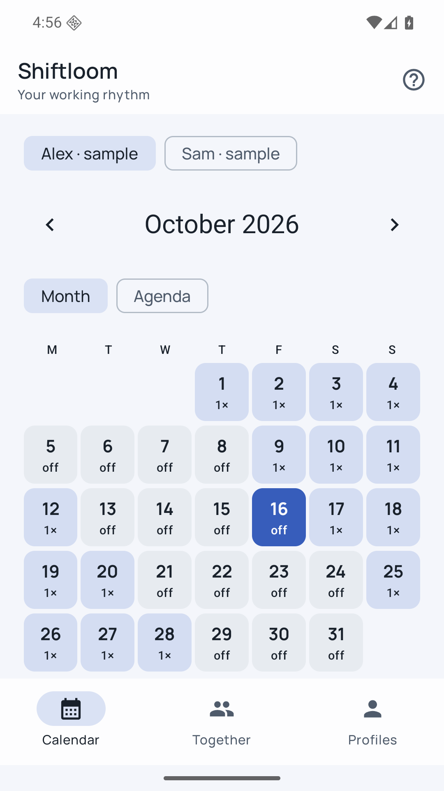
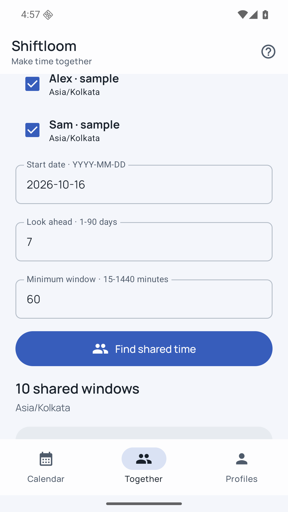
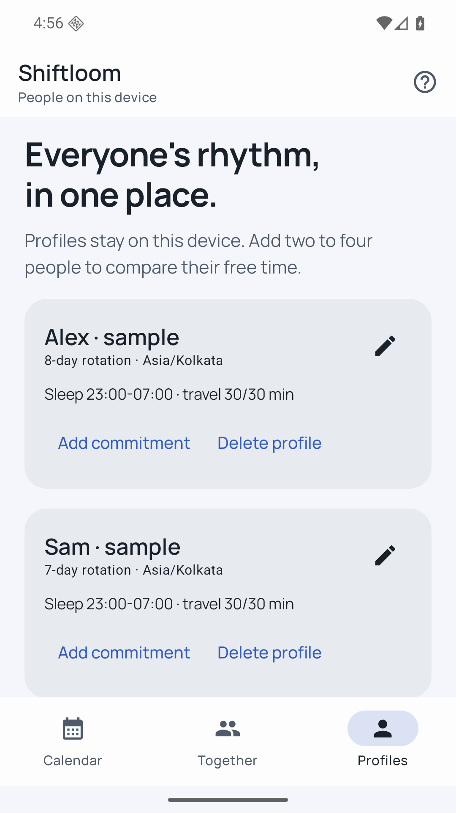

A rhythm that fits real work
Build repeating rotations with overnight and split shifts. Add exceptions without rebuilding the calendar.
Find the moments when rotating schedules finally line up.
View on Google PlayPreparing for releaseUS $3.99 · UK £3.49 · India ₹149
One upfront purchase. Every feature included.

Rotating shifts and shared availability, accounting for sleep and travel. All core features are included in the purchase, with no extra unlocks.
Build repeating rotations with overnight and split shifts. Add exceptions without rebuilding the calendar.
Compare two to four local profiles after work, sleep, travel and personal commitments.
Use month and agenda views, a home-screen widget, monthly PDF and ICS exports, and portable backups.
Availability PDFs contain free windows. Private notes stay out of monthly exports unless you choose otherwise.


Each profile has its own time zone, rotation anchor, sleep window and travel buffers. Schedule exceptions replace shifts starting on a chosen date. Shared results use your device time zone. A widget shows today for the first profile.
No employer connections, payroll estimates or live synchronization. You control when to update each local profile and when to share a file.
Android 8.0 or later. English interface. Archive limits: 4 GB expanded; individual media files up to 200 MB where applicable. Read the practical details.
No. Profiles live on one device. Shiftloom does not provide accounts, cloud storage or live synchronization.
Yes. Overnight shifts continue into the next date. Calculations use each profile’s time zone and conservatively include repeated clock hours.
Every feature, including shared-time search, widget, PDF/ICS exports and backups. No extra unlocks.